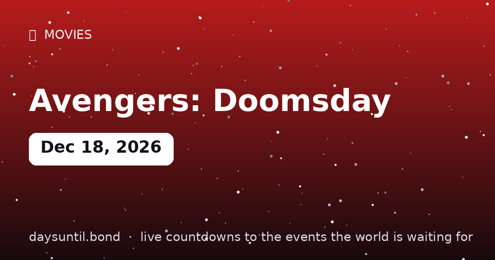

How Many Days Until Avengers: Doomsday?
Avengers: Doomsday falls on Friday, December 18, 2026.
As of October 22, 2026: 57 days to go — 8 weeks and 1 days, 41 weekdays (16 weekend days), about 1,368 hours.

Quick facts
| Date | Friday, December 18, 2026 |
|---|---|
| Days away | Live counter above |
| Runtime | 165 minutes (confirmed) |
| Directors | Anthony and Joe Russo |
| Villain | Doctor Doom (Robert Downey Jr.) |
| Also out that day | Dune: Part Three |
About Avengers: Doomsday
The MCU's biggest assembly ever — Avengers, X-Men, Fantastic Four and Thunderbolts against Robert Downey Jr.'s Doctor Doom — directed by the Russo brothers, in theaters Friday, December 18, 2026 (165 minutes).
It shares its release date with Dune: Part Three — a box-office showdown the internet has already named 'Dunesday'. The live counter above runs to the release/event date worldwide (local time zones may shift availability by hours).
It's the endgame of the Multiverse Saga's Phase Six — and no, it's not the last Avengers movie: Secret Wars follows in 2027. Bookmark this page and watch the seconds fall toward the biggest premiere night of the year.
Plot details are locked in the Marvel vault, but the Russo brothers have confirmed one thing: Doctor Doom is the threat, and nearly every surviving hero is on the board. When the counter hits zero, the argument about who wins December begins.
Why two event films share December 18, 2026
Avengers: Doomsday and Dune: Part Three are scheduled for the same Friday, December 18, 2026 — a head-to-head that would have been unthinkable a decade ago. The mechanics matter for anyone planning to see both: Dune: Part Three holds a three-week IMAX exclusivity window over the Avengers release, which means the biggest screens in most markets will be showing Arrakis rather than Doctor Doom through the opening fortnight.
In practice that pushes the Avengers opening onto standard and premium-large-format screens, and it spreads the audience rather than splitting it. The box office of the weekend is likely to be enormous for both films; the per-screen averages are where the competition will actually show.
What is confirmed so far
The production facts that have been made public: Anthony and Joe Russo direct, returning to the franchise after Infinity War and Endgame; the runtime is 165 minutes, making it the longest Avengers film; and Robert Downey Jr. returns to the MCU as Doctor Doom, fourteen years after his first appearance as Tony Stark and six years after Endgame. The ensemble is billed as the largest the studio has assembled, drawing on the Avengers, the X-Men, the Fantastic Four and the Thunderbolts.
Beyond those points, most of what circulates online is speculation or set-photograph inference. Treat plot specifics with caution until the studio publishes them — the marketing campaign for this film is unusually secretive, and that secrecy is itself the reason so much of the 'leak' traffic is unreliable.
How to see it in the best format
If the IMAX window is the constraint, the practical ordering is: see Dune: Part Three in IMAX during its three-week exclusivity, then see Avengers: Doomsday in the best non-IMAX premium format you can find, or wait the three weeks and catch Avengers on IMAX afterwards. Both films open on the same day, so neither requires you to choose which weekend you go.
For opening-night tickets, the date to watch is not the release date but the day pre-sales open, which for a film at this scale is typically four to six weeks ahead — that puts it in the first half of November 2026.
The December 2026 cinema calendar
| Date | Day | What opens | Note |
|---|---|---|---|
| Nov 19, 2026 | Thursday | Grand Theft Auto VI | Games, not cinema — but the attention competitor |
| Dec 18, 2026 | Friday | Avengers: Doomsday | 165 minutes, Russo brothers |
| Dec 18, 2026 | Friday | Dune: Part Three | Three-week IMAX exclusivity |
| Dec 25, 2026 | Friday | Christmas Day | Traditionally the biggest box-office day of the year |
What the Russo brothers bring back
Anthony and Joe Russo directed Avengers: Infinity War and Avengers: Endgame, the two films that closed the Infinity Saga and which remain the studio's commercial high-water mark. Their specific skill is the management problem: dozens of characters with existing arcs, fans who have watched everything, and a plot that has to give each of them something without collapsing under the weight of it.
Their return after a seven-year gap is the clearest signal the studio could send about how much is riding on this film. The gap also matters practically — the Russos left after Endgame, directed several non-Marvel projects, and have said repeatedly that the scale of this one is larger than anything they have attempted.
Where Doomsday sits in the saga
The film is the culmination of the Multiverse Saga, the phase that followed Endgame and that has spent several films setting up threats from outside the original timeline. That is the structural reason Doctor Doom is the antagonist: he is a character who does not belong to the Avengers' world, and a villain introduced from a parallel reality is what lets the studio bring in the X-Men and the Fantastic Four without a decade of origin films.
The ensemble billing — Avengers, X-Men, Fantastic Four and Thunderbolts — reflects that. It is an unusually wide cast even by this franchise's standards, and the risk with any film built this way is that it becomes a checklist. The 165-minute runtime is, on the available evidence, the studio's answer to that.
What to know before you go in
The two films that matter most are Avengers: Infinity War and Avengers: Endgame — the Russos' own, and the ones this film structurally follows. Beyond those, the Multiverse Saga entries are the ones paying off here, particularly the films that introduced the Fantastic Four and the Thunderbolts, since both teams are billed in the ensemble.
If you have fallen behind, the honest advice is to watch Endgame and then whatever the studio releases in the twelve months before December 2026. The marketing campaign for this film has been deliberately sparse, and the studio's own description of the cast suggests the gaps will be filled on screen rather than beforehand.